RTESArenaAssist ist eine Hilfsanwendung für The Elder Scrolls: Arena. Sie blendet beim Spielen Übersetzung, Karte, Journal, Log, Spielstandverwaltung, Bildschirmaufnahmen, Wörterbuch und Handbuch als Zusatzanzeige ein.
Die Bilder zeigen Assist in deiner Anzeigesprache, mit dem Thema „Dunkel“, den Standardeinstellungen und im nicht verbundenen Zustand. Bei bestehender Verbindung ändert sich die Anzeige je nach aktuellem Bildschirm und Spielzustand von Arena.
Der übliche Ablauf: Starte Arena, verbinde Assist damit und spiele im Layoutmodus, den du über die Schaltfläche ⊞ aktivierst. Im Layoutmodus können das DOSBox-Spielfenster und die Übersetzung, die Karte und die Tabs von Assist nebeneinander in einem Bildschirm angeordnet werden, sodass du nicht mit Alt+Tab wechseln musst.
Einzelheiten zu den Einstellungen findest du auf der Seite „Detaillierte Anleitung zum Einstellungsdialog“ dieses Handbuchs.
Die veröffentlichte Version enthält keine Originaltexte von Arena. Beim ersten Start erzeugt Assist die Übersetzungsdateien aus dem Arena-Ordner des Benutzers.
Wähle zuerst die Anzeigesprache von Assist. Die gewählte Sprache wird sofort auf diesem Bildschirm übernommen. Dieser Bildschirm ist nur auf Japanisch, Englisch und Spanisch verfügbar; in allen anderen Sprachen erscheint er auf Englisch (so wie im Bild).
| Bedienelement | Beschreibung |
|---|---|
| Sprachliste | Wählt die Sprache der Benutzeroberfläche von Assist. Auf diesem Bildschirm stehen Japanisch, English und Español zur Auswahl. Alle anderen Sprachen wählst du nach dem Start im Einstellungsdialog auf dem Tab „Allgemein“ unter „Sprache“. |
Next (Weiter) | Weiter zur Festlegung des Arena-Ordners. |
Wenn du Arena vor diesem Schritt startest, erkennt Assist den Installationsordner automatisch aus dem laufenden Arena. Gelingt das nicht, gibst du den Datenordner von Arena mit Browse… (Durchsuchen) an.
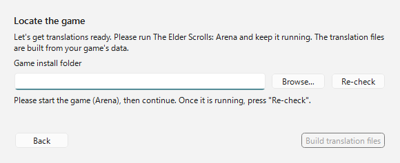
| Element | Beschreibung |
|---|---|
Game install folder (Installationsordner des Spiels) | Gib den Ordner ARENA von Arena an. |
Browse… (Durchsuchen) | Wählt den Arena-Ordner in einem Ordnerauswahldialog. |
Re-check (Erneut prüfen) | Sucht das laufende Arena erneut. |
Build translation files (Übersetzungsdateien erstellen) | Sobald ein gültiger Arena-Ordner gefunden wurde, geht es weiter mit der Erzeugung der Übersetzungsdateien. |
Assist erzeugt die Übersetzungsdateien aus den Daten im Arena-Ordner. Danach öffnet sich das Hauptfenster.

Während der Erzeugung zeigt Assist einen Fortschrittsbalken und den aktuellen Schritt an. Da auch Daten aus dem laufenden Arena gelesen werden, darfst du Arena erst schließen, wenn alles fertig ist.
Oben in Assist befindet sich die Verbindungsleiste, in der Mitte der Tab-Bereich und unten die Statusleiste.
Direkt nach dem Start besteht keine Verbindung. Starte Arena / DOSBox und klicke dann oben rechts auf Verbinden.

| Bereich | Beschreibung |
|---|---|
| Verbindungsstatus | Zeigt „Nicht verbunden“ bzw. bei bestehender Verbindung den Namen des Bildschirms, den IMG-Namen und weitere Angaben. |
| Verbinden / Trennen | Verbindet mit Arena in DOSBox oder trennt die Verbindung. |
⏸ / ▶ / ■ | Hält das Vorlesen an / setzt es fort / beendet es. Das Vorlesen ist verfügbar, wenn du es im Einstellungsdialog auf dem Tab „Vorlesen“ aktivierst (standardmäßig AUS). |
⊞ | Schaltet den Layoutmodus um. Ein Rechtsklick öffnet das Menü für die Anordnung. |
📷 | Speichert einen Screenshot. Im Layoutmodus wird das gesamte Layout als ein Bild gespeichert. Auch solange das Spielfenster (DOSBox) den Fokus hat, speichert das Tastenkürzel (standardmäßig F12) auf dieselbe Weise. |
⚙ | Öffnet den Einstellungsdialog. |
Die Meldung „Tastenkürzel F12 registriert“, die direkt nach dem Start in der Statusleiste erscheint, zeigt an, dass das Tastenkürzel für die Aufnahme einsatzbereit ist. Die Taste kannst du im Einstellungsdialog auf dem Tab „Allgemein“ ändern.
Nach dem Verbinden steht links in der Verbindungsleiste der Name des erkannten Bildschirms. Im folgenden Beispiel ist Assist mit dem Titelbildschirm von Arena verbunden.
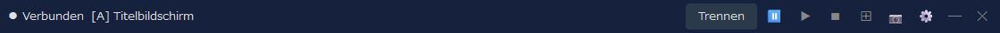
Rechts neben dem Bildschirmnamen steht außerdem der IMG-Name, den dieser Bildschirm verwendet (bei Bildschirmen ohne IMG, wie dem Titelbildschirm, erscheint er nicht). Im Einstellungsdialog auf dem Tab „Anzeige“ kannst du umschalten, ob der Bildschirmname und der IMG-Name angezeigt werden.
Assist ist grundsätzlich für den Einsatz im Layoutmodus gedacht. Die Tabs funktionieren auch im normalen Fenster, doch im Layoutmodus lassen sich Spielfenster, Übersetzung, Karte, Log und mehr in einem Bildschirm festsetzen und gemeinsam im Blick behalten.
Im Standardlayout befindet sich links das DOSBox-Spielfenster, rechts die Haupt-Tabs von Assist und unten ein Hilfspanel. Während des Spiels kannst du rechts Karte oder Journal prüfen und unten oder im Tab „Übersetzung“ die Übersetzung des aktuellen Bildschirms ansehen.
| Bedienung | Beschreibung |
|---|---|
Linksklick auf ⊞ | Startet bzw. beendet den Layoutmodus. |
Rechtsklick auf ⊞ | Hier wählst du Layoutform, Ecke für die Anordnung, Folgemodus, erneutes Anordnen, Anzeige im Vordergrund und mehr. |
📷 | Im Layoutmodus wird das gesamte Layout aus DOSBox und Assist als ein Bild gespeichert. |
Trennen | Trennt die Verbindung zu Arena. Beendest du zuerst den Layoutmodus und trennst danach, bleibt der Bildschirm übersichtlicher. |
Die Screenshots der einzelnen Tabs dienen dazu, den Aufbau der Oberfläche zu zeigen. Bei bestehender Verbindung wird der Inhalt je nach aktuellem Bildschirm und Spielzustand von Arena aktualisiert.
Der zentrale Tab, der die Übersetzung zum aktuellen Bildschirm zeigt. Die Anzeige wechselt je nach Situation, etwa beim Titelbildschirm, bei der Charaktererstellung, in Gesprächen, bei Einrichtungen, Gegenständen und Zaubern.
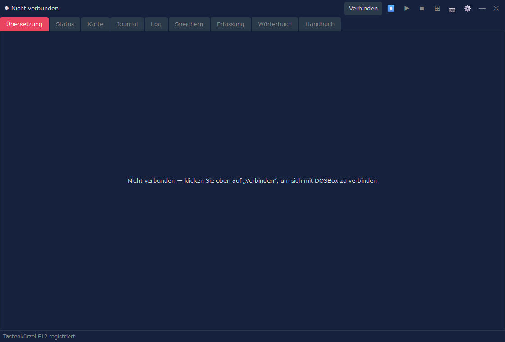
| Anzeige | Beschreibung |
|---|---|
| Übersetzung | Zeigt die Übersetzung des aktuellen Bildschirms oder Ereignisses in der Anzeigesprache. |
| Original | Je nach Einstellung wird auch der zugehörige englische Originaltext angezeigt. |
| Spezialanzeigen | Klassenliste, Rassenliste, Ausrüstung, Einrichtungslisten, Kauflisten und Ähnliches wechseln zu einer eigenen, übersichtlichen Anzeige. |
Auf dem Tab „Kampfinformationen“ der Einstellungen kannst du Kampfinformationen auch im Tab „Übersetzung“ anzeigen lassen. Wähle „Kampf- und normale Ansicht“ oder „Vollbild-Kampfansicht“ und lege fest, ob Text oder Gegnerbalken gezeigt werden. Standardmäßig ist keine Anzeige eingestellt, und die bisherige Anzeige des Tabs „Übersetzung“ bleibt erhalten.
Der Tab zum Prüfen der Attribute und des Zustands des Charakters. Nach der Charaktererstellung oder während des Spiels zeigt er bei bestehender Verbindung die Statusinformationen an.
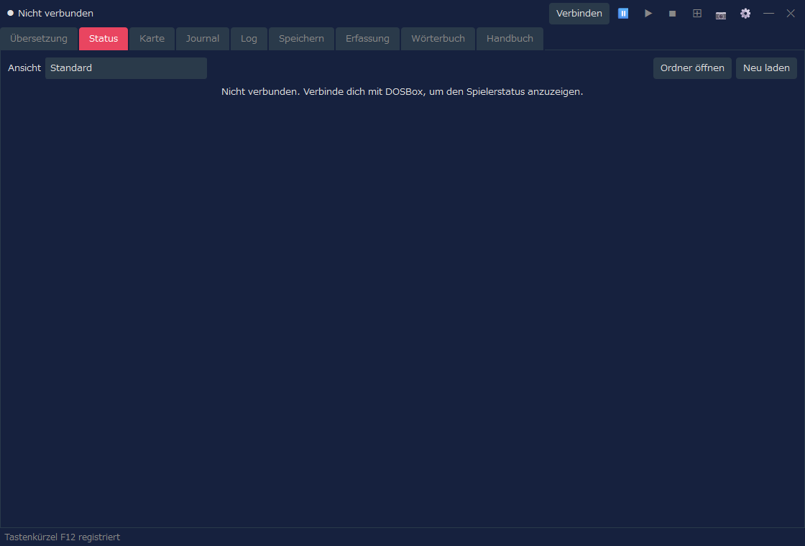
| Anzeige | Beschreibung |
|---|---|
| Ansicht | Wähle „Standard“ (die bisherige Anzeige) oder ein beliebiges Design (einen Charakterbogen). Die Statusanzeige und die Verteilung der Attribute im Tab „Übersetzung“ verwenden ebenfalls die hier gewählte Ansicht. |
| Attribute | Du kannst die Hauptattribute wie Stärke und Intelligenz prüfen. |
| Zustandswerte | Du kannst Gesundheit, Erschöpfung, Zauberpunkte und Ähnliches prüfen. |
| Änderungen | Nur wenn du die Cheat-Einstellung ausdrücklich aktivierst, sind Änderungen wie die der Attribute möglich (in der Ansicht „Standard“). |
Eine Funktion, die den Status in einem Design deiner Wahl anzeigt. Wählst du bei „Ansicht“ etwas anderes als „Standard“, wird der Status im gewählten Design angezeigt. Ein Design ist eine HTML-Datei (eine Vorlage); es werden 8 Designs mitgeliefert, und du kannst auch eigene erstellen. Manche Designs zeigen das Gesicht und das Ganzkörperbild (mit Ausrüstung), den Zustand des Charakters (krank, vergiftet, gelähmt und so weiter) und den Rüstungswert jedes Körperteils (aus der Ausrüstung berechnet; je kleiner, desto besser geschützt). Gesicht und Ganzkörperbild werden aus den Dateien deines Arena erzeugt.
| Bedienung | Beschreibung |
|---|---|
| Ordner öffnen | Öffnet den Ordner für deine eigenen Charakterbögen (HTML-Dateien), nämlich character_sheets am selben Ort wie RTESArenaAssist.exe. Beim ersten Öffnen werden Kopien der mitgelieferten Designs dort abgelegt. Dateien im Ordner erscheinen in der Liste „Ansicht“ mit dem Zusatz „(Ordner)“. |
| Neu laden | Liest die Charakterbögen im Ordner neu ein. Drücke es, nachdem du eine Datei geändert hast. |
Die Liste der mitgelieferten Designs, die Funktionsweise der Charakterbögen sowie die einsetzbaren Werte und ihre Schreibweise findest du auf der Seite „Status-Designs (Charakterbögen)“ dieses Handbuchs.
Zeigt die automatische Karte von Verliesen, Städten, Feldern und Innenräumen. Die Anzeige wird passend zum aktuellen Aufenthaltsort im Spiel aktualisiert.
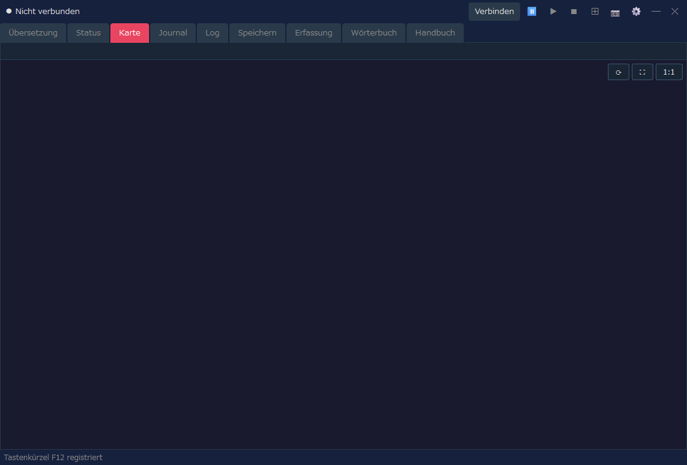
| Anzeige | Beschreibung |
|---|---|
| Aktueller Standort | Zeigt anhand des Spielzustands bei bestehender Verbindung die aktuelle Karte und Position. |
| Automatische Karte | Zeichnet erkundete Bereiche, Wände, Eingänge, Feldgelände und mehr. |
| Anzeigeeinstellungen | Gitternetz, Chunk-Koordinaten, erweiterte Felddarstellung und Ähnliches kannst du im Einstellungsdialog anpassen. |
Ein Tab, in dem du die Einträge des Logbuchs / Journals aus dem Spiel in der Anzeigesprache lesen kannst.
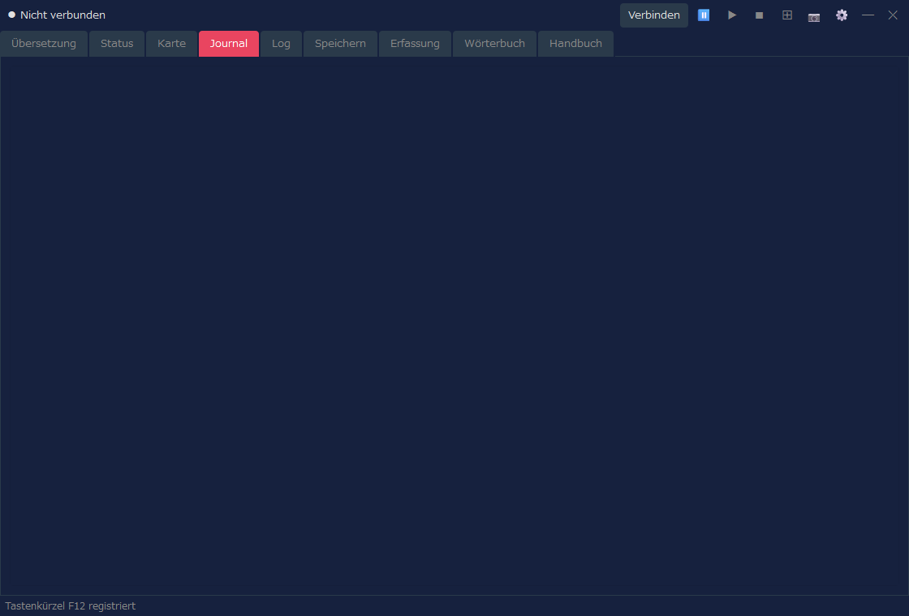
| Anzeige | Beschreibung |
|---|---|
| Datum und Überschrift | Zeigt Datum und Kurzfassung der Journaleinträge. |
| Text | Zeigt den Text des Logbuchs in der Anzeigesprache. |
| Aktualisierung | Wird das Journal im Spiel aktualisiert, wird auch die Anzeige in Assist aktualisiert. |
Ein Tab, der die von Assist angezeigten Übersetzungen als Verlauf zeigt. Er eignet sich, um verpasste Texte später noch einmal nachzulesen.
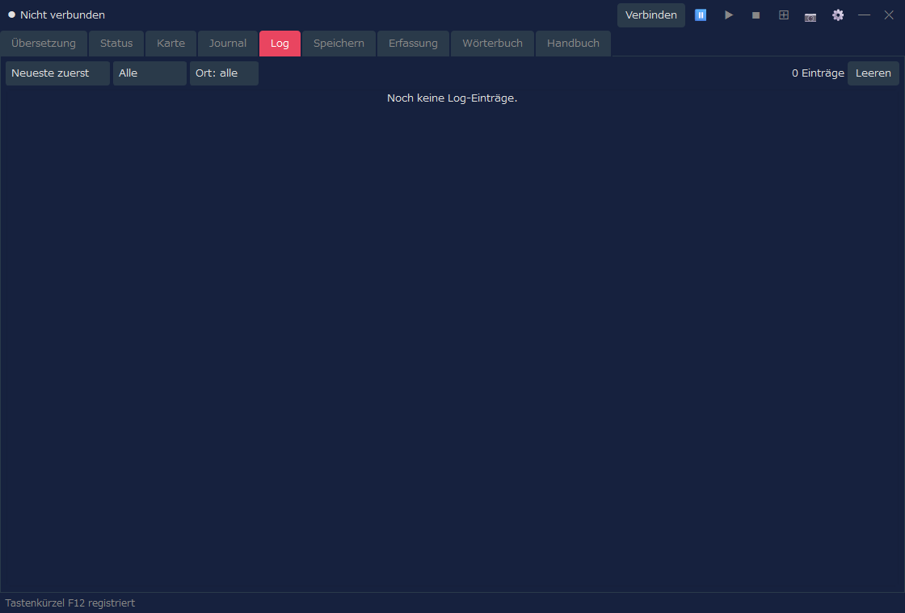
| Bedienung | Beschreibung |
|---|---|
| Reihenfolge | Wechselt zwischen neueste zuerst und älteste zuerst. |
| Filter | Grenzt das Log nach Art oder Ort ein. |
| Leeren | Löscht das angezeigte Log. |
Wenn du das Speichern des Kampfprotokolls aktiviert hast und Aufzeichnungen vorliegen, kannst du im Tab „Log“ zwischen dem normalen Log und dem Kampfprotokoll umschalten. Gibt es kein Kampfprotokoll, wird wie bisher nur das normale Log angezeigt.
Ein Tab zur Verwaltung der Spielstand-Slots und Sicherungen von Arena. Er unterstützt Vorgänge an den Spielstanddaten, etwa die automatische Sicherung vor einer Wiederherstellung.
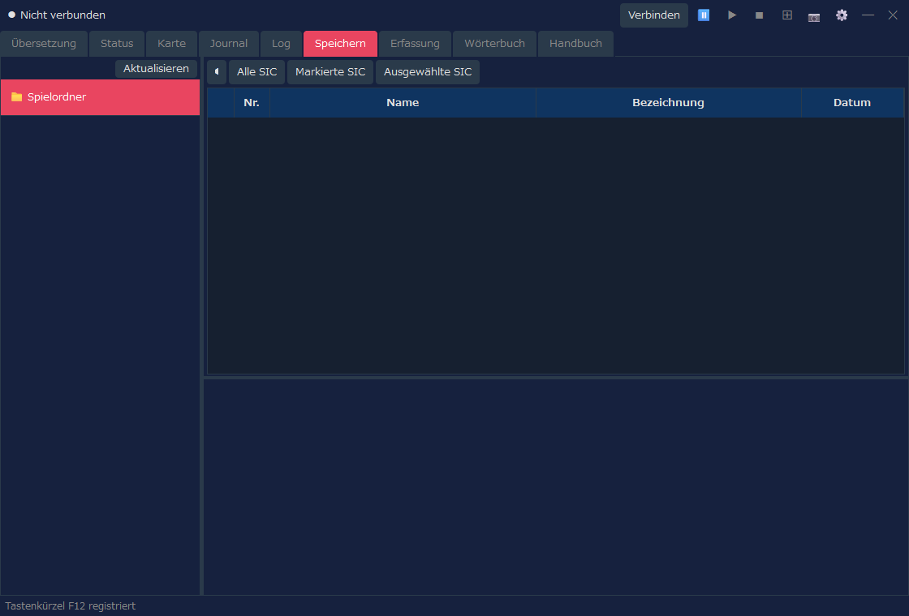
| Bedienung | Beschreibung |
|---|---|
| Slot-Liste | Listet die Spielstand-Slots von Arena auf. |
| Sicherung | Sichert den ausgewählten Spielstand. |
| Wiederherstellen | Stellt Spielstanddaten aus einer Sicherung wieder her. |
| Löschen | Löscht nicht mehr benötigte Sicherungen oder Spielstände. |
Ein Tab, in dem du die mit der Schaltfläche 📷 gespeicherten Screenshots ansiehst. Auch im Layoutmodus aufgenommene Bilder kannst du von hier öffnen.
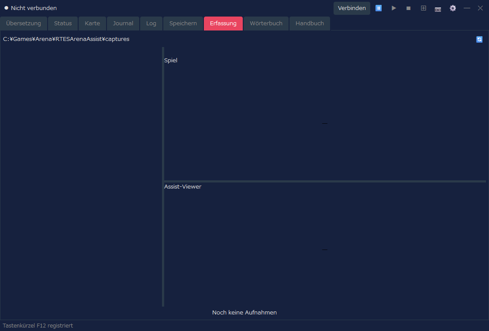
| Bedienung | Beschreibung |
|---|---|
| Liste | Zeigt die gespeicherten Aufnahmen. |
| Vorschau | Zeigt das ausgewählte Bild. |
| Sperren | Schützt Bilder, die du behalten möchtest, vor dem Löschen. |
| Löschen | Löscht das ausgewählte oder nicht mehr benötigte Bilder. |
Ein Tab zum Durchsuchen des Übersetzungswörterbuchs und der Verlies-Texte von Assist. Du kannst damit Wörter und Sätze nachschlagen, die im Spiel aufgetaucht sind.
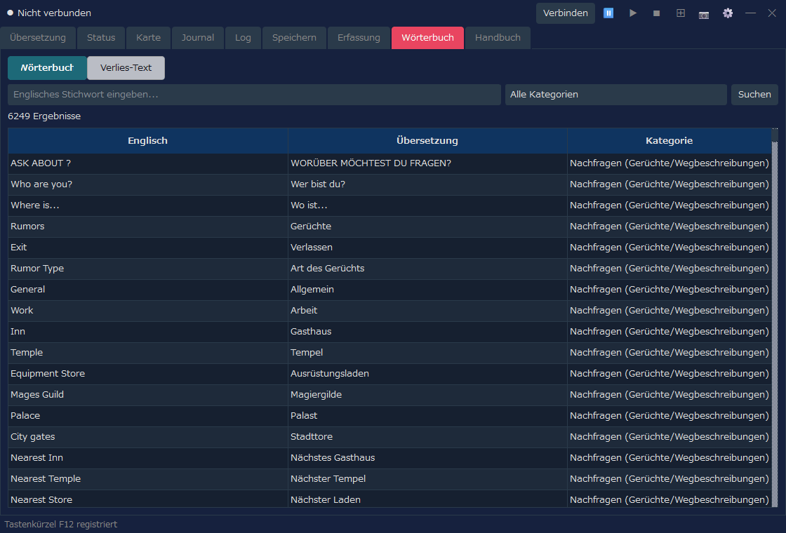
| Anzeigemodus | Beschreibung |
|---|---|
| Wörterbuch | Suche nach englischem Stichwort, Übersetzung und Kategorie. |
| Verlies-Text | Durchsucht und zeigt die aus INF stammenden Texte der Verliese. |
Ein Tab, in dem du die grundlegende Bedienung und die Systeme von Arena sowie die Funktionen von Assist in deiner Anzeigesprache nachlesen kannst. Nutze ihn, wenn du während des Spiels Bedienung oder Begriffe nachschlagen möchtest.
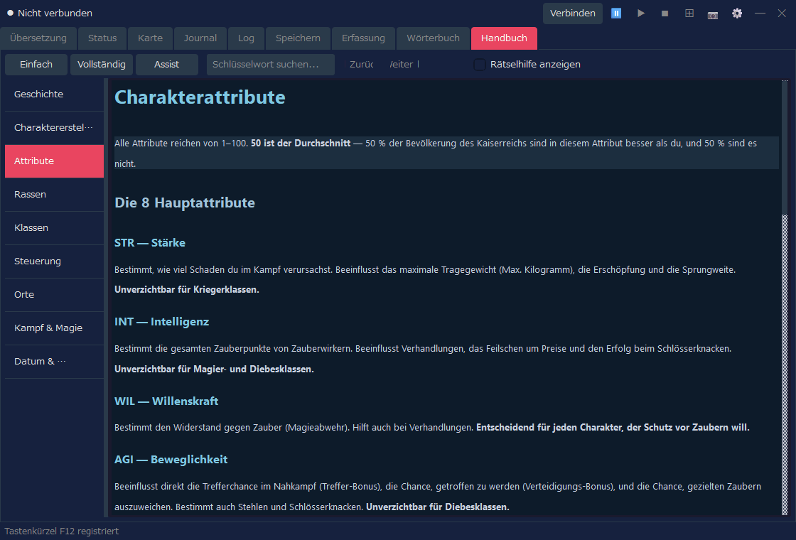
| Bedienung | Beschreibung |
|---|---|
| Einfach / Vollständig / Assist | Schaltet den angezeigten Inhalt um (siehe die Tabelle unten). |
| Schlüsselwortsuche | Durchsucht das Handbuch. |
| Liste links | Wechselt zwischen den Kapiteln, etwa Geschichte, Charaktererstellung, Steuerung und Kampf. |
| Umschalter | Inhalt | Sprachen |
|---|---|---|
| Einfach | Erklärung des Spiels (9 Kapitel) | 7 Sprachen |
| Vollständig | Übersetzung des offiziellen Handbuchs (das Übersetzungspaket wird importiert und angezeigt) | Derzeit nur Japanisch |
| Assist | Erklärung der Funktionen von Assist (Grundlegende Bedienung, Einstellungsdialog, Status-Designs (Charakterbögen)) | 7 Sprachen |
Vollständige Version (Übersetzung des offiziellen Handbuchs)
Unter „Vollständig“ kannst du die Übersetzung des offiziellen Handbuchs (Player's Guide und Nachtrag) lesen. Die Übersetzung wird als Übersetzungspaket für jede Anzeigesprache (RTESArenaAssist-manual-<Sprache>.zip) getrennt vom Programm auf der Download-Seite des Handbuchs verteilt (derzeit nur Japanisch). Bei der ersten Verwendung importierst du es so:
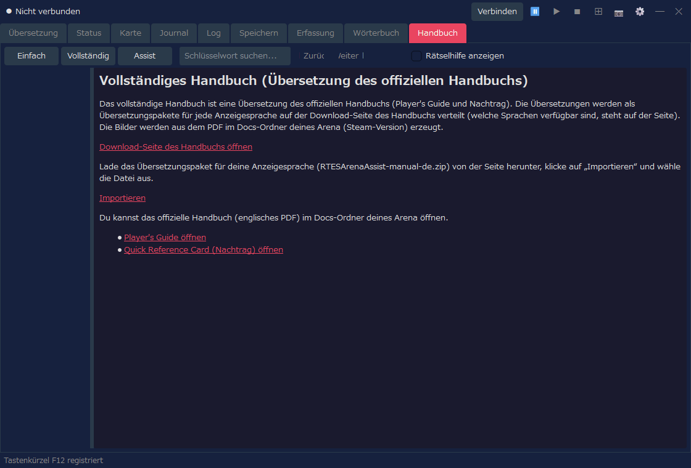
Die Bilder des Handbuchs werden aus der Datei Player Guide.pdf im Ordner Docs deines Arena (Steam-Version) erzeugt. Wird die PDF nicht gefunden oder ist die Version eine andere, wird nur der Text angezeigt. Prüfe den „Spielordner“ in den Einstellungen und klicke dann auf „Bilder neu erzeugen“, damit auch die Bilder angezeigt werden. Nach dem Import kannst du die heruntergeladene Datei löschen. Assist selbst stellt keine Internetverbindung her (der Download erfolgt in deinem Browser).
Unter „Vollständig“ wird außerdem ein Link angezeigt, der das offizielle Handbuch (englische PDF) im Ordner Docs öffnet. Ist die Anzeigesprache Englisch, erscheint anstelle des Übersetzungspakets nur dieser Link.
Verbinden, um dich mit Arena / DOSBox zu verbinden.⊞, um den Layoutmodus zu starten.📷 oder dem Tastenkürzel (standardmäßig F12) auf.⊞ den Layoutmodus und klicke bei Bedarf auf Trennen.Anzeigegröße des Layoutmodus, Layoutform, Übersetzungspanel, Speicherort der Aufnahmen und mehr passt du im Einstellungsdialog an. Auch das Vorlesen der Übersetzung aktivierst du im Einstellungsdialog auf dem Tab „Vorlesen“.